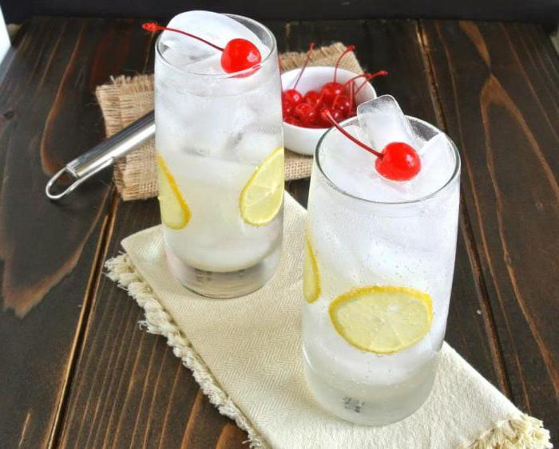
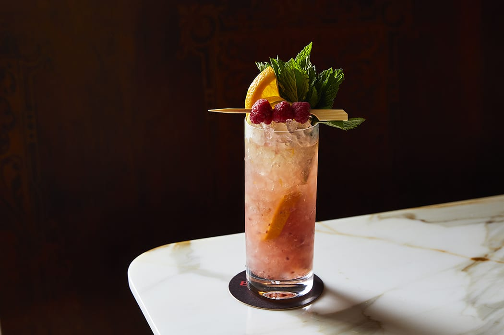
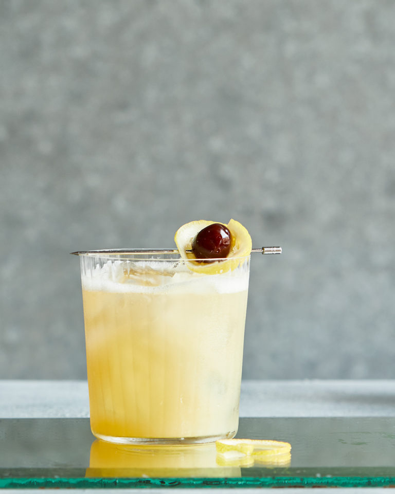
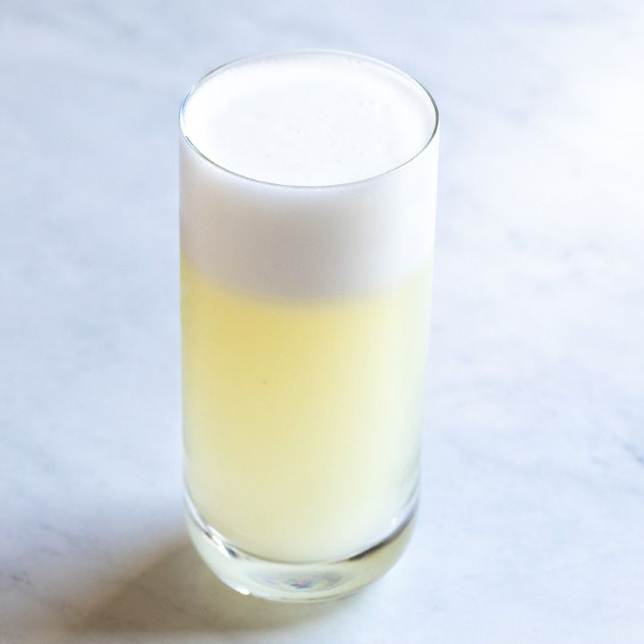
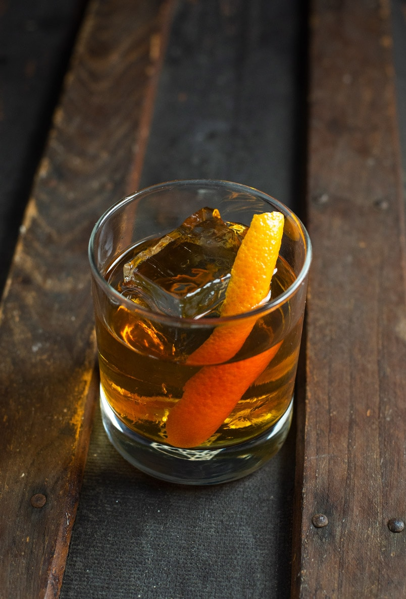
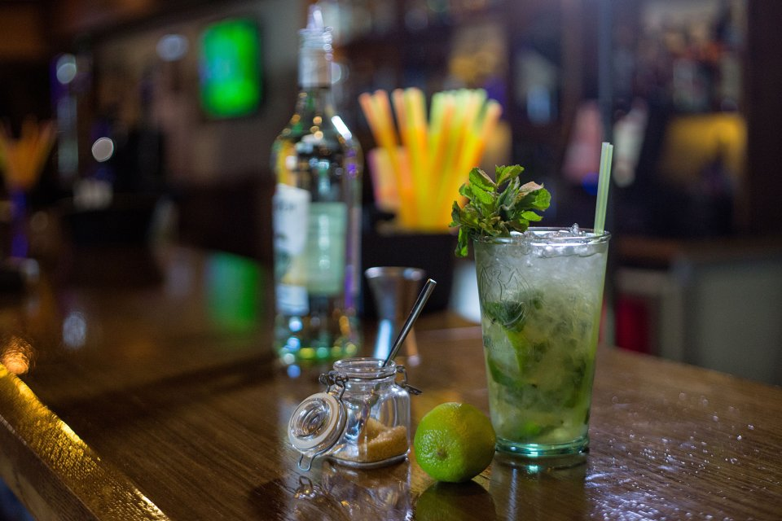

Історія коктейлів
Історія походження смачного, яскравого напою, назва якого в перекладі з англійської звучить як «півнячий хвіст», дивовижна, перш за все, тому, що пов`язана не з одним варіантом виникнення коктейлю. Версій так багато - просто голова йде обертом: хто ж правий? Іспанці вважають, ніби коктейль зобов`язаний своєю появою популярності півнячих боїв: у результаті перемоги пернатого учасника, на якого робилася ставка, щасливі гравці змішували в келиху будь-ліпші під руку напої, прагнучи надати отриманої композиції різнокольоровий, шаруватий характер.
Титул найкрасивішої легенди про походження змішаного напою по праву носить версія американців, згідно з якою коктейль винайшла жінка, причому абсолютно випадково. Справа була в передмісті Нью-Йорка XVIII століття: власник місцевого бару позбувся красеня-півня. Щоб прискорити пошук, чоловік пообіцяв тому, хто знайде птицю руку і серце своєї дочки. Як і в будь-який іншій казці, пропажа знайшлася. Наречена ж, дізнавшись про власне весілля з виручив батька військовим, рознервувалася до такої міри, що машинально стала змішувати різні рідини в одному келиху. Так з`явився «кок Тейл» - напій, здатний підняти настрій своїм багатогранним смаком і святковим зовнішнім виглядом
Види коктейлів
Розглянемо деякі популярні види.
- Colins
- Cobler
- Sour
- Fizz
Colins
Коллінз - Готуються в знаменитому келиху collins До складу таких коктейлів входять один спиртний напій, лимонний сік, цукор, содова і лід. Також вони є класичними long drink.
Cobler
Коблери і Кулери - Майже Коллінз, тільки в склад не додається цукор, або лимонний сік.
Кулери - це спиртний напій, який подається з газованою водою і льодом (Джин-Тонік або Бетон), або ж з імбирним елем. А ось Коблери подаються ще й з колотим льодом (краш), а також фруктами;
Sour
Сімейство коктейлів, добре відомих вже в XIX столітті, як різновид "пуншу для одного". Складається з алкогольної основи, цукру, води, лимонного соку та льоду.
Fizz
До складу коктейлів входить сильногазована вода (to fizz з англійської - «шипіти»). А заливається «шипучкой» збиті в шейкері лимонний сік, цукор і спиртний напій. Подаються в хайбол .
Топ-5 класичних коктейлів
Dry Martini

Це п’янкий, але вишуканий класичний джин можна розмішати у склянці – пропорції джину до сухого вермуту залежать від ваших вподобань, а також від ваших планів на наступний день.
- Сухий вермут-15мл
- Джин-75мл
- Налити інгридієнти у змішувальний стакан
- Додати лід
- Перемішувати протягом 30 секунд
- Перелити в охолоджений келих та додати цедру лимону
Old Fashioned
Old Fashioned, можливо, не найбільш популярний класичний коктейль в елітних барах світу, але він все також набільш популярний у барах, які проходили опитування для цього рейтингу. До того ж, здається, що коктейль Old Fashioned «існував завжди» — історик Девід Уондрич прослідкував його історію до 1833 року — і він лишається вічною класикою.
- Бурбон-50мл
- Цукор-1 барна ложка
- Біттер ангостура-3 деш
- Насипати цукор в змішувальний стакан
- Додати 3 деш ангостури, пару капель води і змішати
- Додаємо 50мл бурбону та лід
- Перемішуємо протягом 30 секунд
- Переливаємо в охолоджений келих
Whiskey Sour

У той час, коли у барах змішували бренді із лимонним соком, Whiskey Sour помітно виділявся серед усіх подібних напоїв. Тепер це один із найпопулярніших коктейлів, принаймні, у найкращих барах світу. Існує веганський варіант коктейлю – із заміною яєчної піни. Часом цей варіант виглядає навіть більш безпечним.
- Бурбон-60мл
- Лимонний сік-30мл
- Цукровий сироп-15мл
- Яєчний білок
- або замінник білка
- Ангостура біттер-3 деш
- В шейкер додаємо: яєчний білок, цукор,лимонний сік та шейкуємо без льоду
- Додаємо лід та бурбон і шейкуємо знову
- Переливаємо в охолоджений келих
- Додаємо 3 деш ангостури та прикрашаємо цедрою апельсину
Mojito
Коли мохіто став коктейлем «тітоньок на відпочинку», він втратив репутацію у найкращих барах світу. Але з’явився новий Pornstar Martini і вразив усіх своїм інтригуючим смаком. Тож звичний нам мохіто також не варто забувати, адже це класика!
- Білий ром-50мл
- Сок лайму-30мл
- Цукор
- М"ята
- Газована вода
- Кладемо м"яту в шейкер та трохи давимо
- Додаємо ром, сік лайму, цукор та колотий лід
- Шейкуємо та переливаємо в келих для подачі
- Додаємо газовану воду та досипаємо лід
Negroni

Король помер, хай живе негроні. Цей коктейль потіснив у рейтингу Old Fashioned, який завжди номер один!
- Джин-30мл
- Кампарі-30мл
- Солодкий вермут-30мл
- В змішувальний стакан доаємо всі інгридієнти
- Додаємо лід та мішаємо 30-40сек
- Переливаємо в охолоджений келих
- Прикрашаємо цедрою апельсину